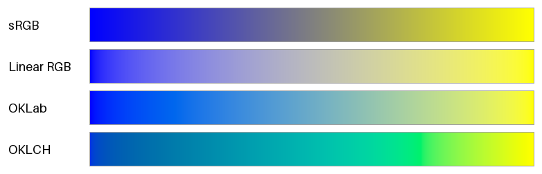
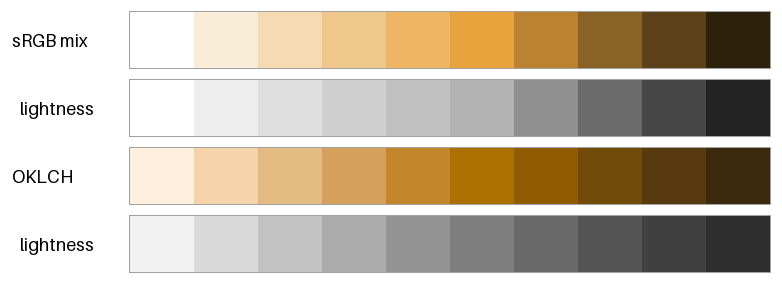
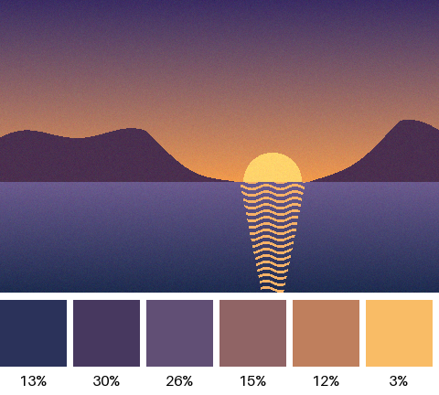

パレットの作り方
配色に使う色の集まりをパレットという。本章では、色空間で学んだ色空間を使って、パレットを計算で作る方法を紹介する。
本章のコードは palette.py にある。
グラデーションの補間
2 つの色の間を滑らかにつなぐ色の列（グラデーション）は、2 色の座標を線形補間して作る。始点の色を \(\boldsymbol{c}_0\)、終点の色を \(\boldsymbol{c}_1\) とすると、割合 \(t\)（0 から 1）の位置の色は次の式で求められる。
同じ式でも、どの色空間の座標で補間するかによって、途中の色は大きく変わる。図 12 は、青（#0000ff）から黄（#ffff00）への補間を、4 つの色空間で比べたものである。

図 12 青から黄への補間。上から sRGB、線形 RGB、OKLab、OKLCH で補間したもの。
色空間 |
補間の結果 |
|---|---|
sRGB |
中央が暗く濁った灰色になる。青と黄は補色の関係にあり、RGB の値を平均すると R = G = B に近づくためである。 |
線形 RGB |
青と黄の光を混ぜた結果を正しく再現しており、中央は明るい灰色になる。ただし、始点の側で急に明るくなり、明るさの変化が均等ではない。 |
OKLab |
明るさが均等に変化する。中央は彩度の低い色になるが、濁りは少ない。 |
OKLCH |
明度と彩度に加えて色相も補間するので、途中で色相環の上の色（青緑、緑）を通る。彩度を保った鮮やかなグラデーションになる。 |
OKLab での補間は、color_utils.py の変換関数を使えば、sRGB での補間とほとんど同じ手間で書ける。
def interpolate_oklab(start: FloatArray, end: FloatArray,
t: FloatArray) -> FloatArray:
"""OKLab の直交座標 (L, a, b) で補間する。"""
mixed = lerp(srgb_to_oklab(start), srgb_to_oklab(end), t)
return oklab_to_srgb(mixed)
OKLCH での補間では、色相の扱いに注意が必要である。色相は環状の値なので、たとえば 350 度から 10 度へ補間するときは、340 度戻るのではなく 20 度進む方が自然である。そのため、色相の差を -180 度から 180 度の範囲に直してから補間する。
def interpolate_oklch(start: FloatArray, end: FloatArray,
t: FloatArray) -> FloatArray:
"""OKLCH の極座標 (L, C, h) で補間する。色相は近い向きに回す。"""
lch1 = oklab_to_oklch(srgb_to_oklab(start))
lch2 = oklab_to_oklch(srgb_to_oklab(end))
# 色相の差を -180 度から 180 度の範囲にして、短い向きに回す。
hue_diff = (lch2[2] - lch1[2] + 180.0) % 360.0 - 180.0
lightness = lch1[0] + (lch2[0] - lch1[0]) * t
chroma = lch1[1] + (lch2[1] - lch1[1]) * t
hue = lch1[2] + hue_diff * t
return oklch_to_srgb_in_gamut(lightness, chroma, hue)
OKLCH で補間した帯には、緑の付近に折れ目のような変化が見える。途中の色が sRGB の色域の外にあり、彩度が色域の境界で抑えられているためである（色空間の「色域」の節を参照）。補間する 2 色の彩度を下げれば、折れ目はなくなる。
どの色空間で補間するかは、目的によって選ぶ。
見た目に均等なグラデーションを作るには、OKLab を使う。
鮮やかさを保ちたいときは、OKLCH を使う。ただし、途中で予期しない色相を通ることがある。
光の混合を再現するとき（半透明の合成など）は、線形 RGB を使う。
カラースケールの作成
1 つの基準の色から、明るさの異なる色を段階的に並べたものをカラースケールという。カラースケールがあると、同じ色味の色を、背景、枠線、文字など用途に応じて使い分けられる。実践: UI の配色設計の配色設計では、カラースケールが土台になる。
図 13 は、明度の高い橙 #e8a33d（OKLab の明度 \(L\) は約 0.77）を基準の色として、10 段階のカラースケールを 2 つの方法で作り、それぞれの明るさだけを灰色で並べたものである。

図 13 白と黒を sRGB の値で混ぜて作ったカラースケール（上 2 段）と、OKLCH で作ったカラースケール（下 2 段）
1 つ目の方法は、基準の色に白または黒を sRGB の値で混ぜる方法である。簡単だが、段階の明るさの間隔が基準の色の明度に左右される。この例では基準の色が明るいため、白を混ぜる明るい側の 5 段は明度の差が約 0.05 しかなく見分けにくい。一方、黒を混ぜる暗い側の段は明度の差が 0.11 から 0.14 と大きい。また、最も明るい段は白そのものになり、色味がなくなる。
2 つ目の方法は、OKLCH で色相を保ったまま、明度 \(L\) を等間隔に変える方法である。基準の色の明度にかかわらず、明るさの段階が等間隔になる。ただし、基準の色そのものがスケールに含まれるとは限らない。基準の色を必ず使いたい場合は、明度が最も近い段を基準の色で置き換えるとよい。明度が極端に高い色や低い色は、sRGB の色域の中で高い彩度を取れないので、彩度は中央の段で最大になるように山形に変えている。
def oklch_scale(base: FloatArray, steps: int, lightest: float = 0.96,
darkest: float = 0.30) -> list[FloatArray]:
"""基準の色の色相を保ち、OKLab の明るさ L を等間隔に変えて段階を作る。
明るさは ``lightest`` から ``darkest`` まで変える。明るさの両端では
表せる彩度が小さくなるため、彩度は中央で最大になるように山形に変え、
さらに色域に収まるように下げる。
"""
_, base_chroma, hue = oklab_to_oklch(srgb_to_oklab(base))
colors = []
for lightness in np.linspace(lightest, darkest, steps):
# 明るさ 0.62 付近で基準の彩度になり、両端に向かって小さくなる。
weight = 1.0 - abs(lightness - 0.62) / 0.5
chroma = base_chroma * max(weight, 0.15)
colors.append(oklch_to_srgb_in_gamut(lightness, chroma, hue))
return colors
画像からの配色の抽出
写真や絵画の配色を参考にしたいときは、画像に多く含まれる代表的な色を取り出すとよい。代表的な色を取り出すには、画素の色を似たもの同士のグループ（クラスタ）に分ける k-means 法がよく使われる。k-means 法は次の手順で、全ての点を \(k\) 個のクラスタに分ける。
点の中から \(k\) 個を無作為に選び、クラスタの中心とする。
各点を、最も近い中心のクラスタに割り当てる。
各クラスタの中心を、そのクラスタに属する点の平均に動かす。
手順 2 と 3 を、中心がほとんど動かなくなるまで繰り返す。
サンプルコードでは、簡単のため、繰り返しの回数を 30 回に固定している。
def kmeans(points: FloatArray, k: int, iterations: int = 30,
seed: int = 0) -> tuple[FloatArray, NDArray[np.intp]]:
"""k-means 法で点の集まりを ``k`` 個のクラスタに分ける。
戻り値は (各クラスタの中心, 各点が属するクラスタの番号)。
"""
rng = np.random.default_rng(seed)
centers = points[rng.choice(len(points), size=k, replace=False)]
labels = np.zeros(len(points), dtype=np.intp)
for _ in range(iterations):
# 各点を、最も近い中心のクラスタに割り当てる。
distances = np.linalg.norm(
points[:, np.newaxis, :] - centers[np.newaxis, :, :], axis=-1)
labels = np.argmin(distances, axis=1)
# 各クラスタの中心を、属する点の平均に動かす。
for i in range(k):
members = points[labels == i]
if len(members) > 0:
centers[i] = members.mean(axis=0)
return centers, labels
色の近さを正しく評価するため、画素の色は OKLab に変換してから分類する。sRGB の値のまま分類すると、色空間の「色差」の節で見たとおり、距離が見た目の差と一致しない。そのため、見た目にはほとんど同じ色が別のクラスタに分かれたり、見た目には違う色が同じクラスタにまとめられたりする。また、画像の全ての画素を使うと計算に時間がかかるので、画素の一部を無作為に選んで分類する。
def extract_palette(image: FloatArray, k: int,
sample: int = 6000) -> list[tuple[FloatArray, float]]:
"""画像から ``k`` 色を取り出し、(色, 画像に占める割合) の並びを返す。
距離を見た目の差に近づけるため、画素を OKLab に変換してから分類する。
計算を軽くするため、画素の一部を無作為に選んで使う。
"""
rng = np.random.default_rng(0)
pixels = srgb_to_oklab(image.reshape(-1, 3))
chosen = pixels[rng.choice(len(pixels), size=sample, replace=False)]
centers, labels = kmeans(chosen, k)
shares = np.bincount(labels, minlength=k) / len(labels)
order = np.argsort(centers[:, 0]) # 暗い色から明るい色の順に並べる。
return [(oklab_to_srgb(centers[i]), float(shares[i])) for i in order]
図 14 は、夕焼けの海辺を模した画像から 6 色を取り出した結果である。色見本の下の数値は、その色のクラスタに属する画素の割合である。

図 14 画像から取り出した 6 色と、画像に占める割合
割合の大きい紫や紺はベースカラーに、割合が約 3% と小さい太陽の黄色はアクセントカラーに向いている。取り出した色と割合は、配色の基本の配色の面積比を考えるときの参考にもなる。
k-means 法の結果は、最初に選ぶ中心によって変わる。サンプルコードでは乱数の種を固定して、毎回同じ結果になるようにしている。
まとめ
グラデーションは、どの色空間で補間するかで結果が大きく変わる。見た目に均等な変化には OKLab を、鮮やかさを保つには OKLCH を使う。
OKLCH で明度を等間隔に変えると、段階が均等なカラースケールを作れる。
k-means 法を使うと、画像から代表的な色とその割合を取り出せる。分類は OKLab で行う。